# Simulated therapy outcome data
therapy_data <- tibble(
condition = rep(c("Control", "CBT", "Mindfulness"), each = 50),
depression_post = c(
rnorm(50, mean = 18, sd = 5), # Control
rnorm(50, mean = 12, sd = 5), # CBT
rnorm(50, mean = 14, sd = 5) # Mindfulness
)
)Exploratory Data Analysis: Covariation
PSY 410: Data Science for Psychology
Dr. Sara Weston
2026-04-29
From variation to covariation
Recap: Variation
Last session we explored variation — how values vary within a single variable:
- Distributions of continuous variables (histograms, density plots)
- Counts of categorical variables (bar charts)
- Identifying typical values and outliers
Today: Covariation
Covariation is the tendency for values of two or more variables to vary together in a related way.
In psychology, we care deeply about covariation:
- Does anxiety vary with depression?
- Do reaction times vary across different conditions?
- Does age relate to memory performance?
Categorical + Continuous
Example: Mental health by treatment group
Example: Mental health by treatment group
Boxplots: The classic choice
Boxplots: The classic choice
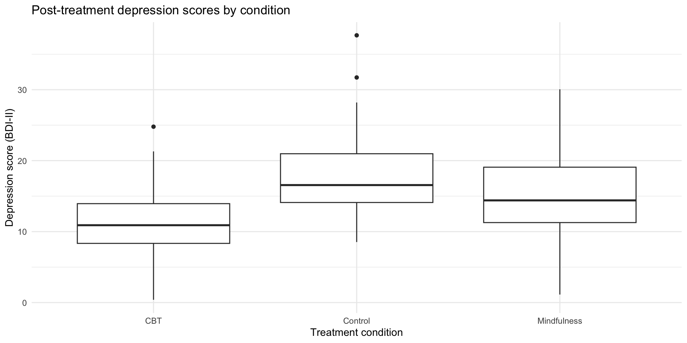
What boxplots show
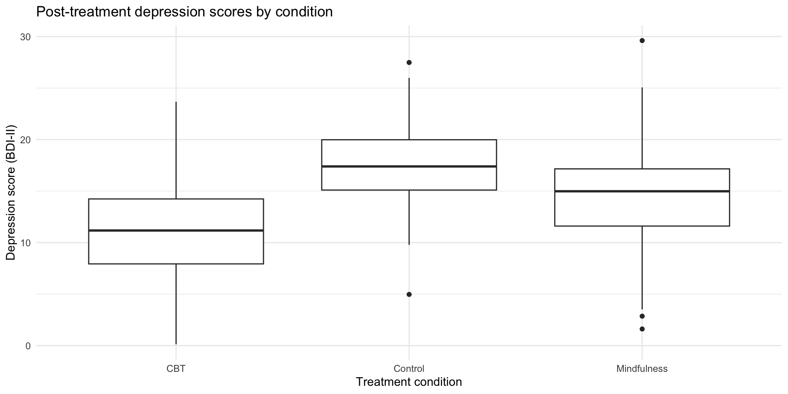
- Line in middle: median
- Box: 25th to 75th percentile (IQR)
- Whiskers: extend to 1.5 × IQR
- Dots: outliers beyond whiskers
Great for comparing distributions, but they hide the actual data points.
The problem with boxplots
Boxplots summarize, but they hide important information:
- The actual distribution shape (is it bimodal? skewed?)
- Individual data points (how many observations are there?)
- The raw data (where do specific values fall?)
We can do better.
Raincloud plots
The modern psych visualization
Raincloud plots combine three elements:
- Violin (distribution shape)
- Boxplot (summary stats)
- Jittered points (individual data)
They’re increasingly popular in psychology publications because they show everything.
Use the ggrain package. (More details here.)
Building a raincloud
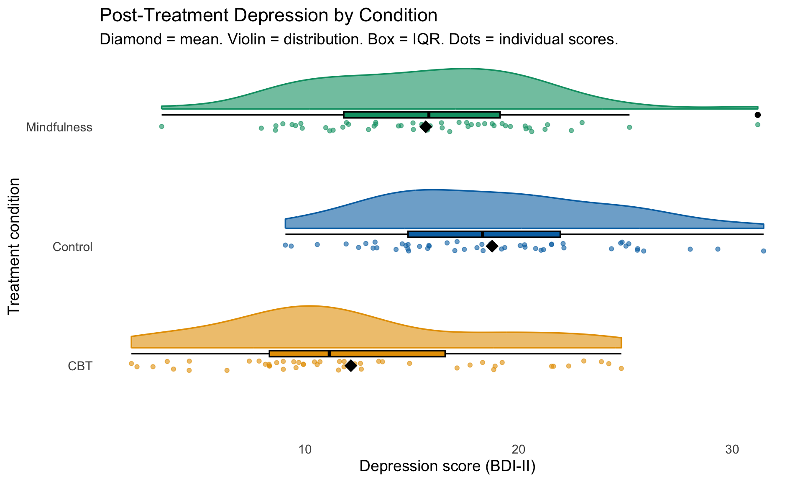library(ggrain)
therapy_data |>
ggplot(aes(
x = condition,
y = depression_post,
fill = condition,
color = condition)) +
# geom_rain creates all parts of your raincloud
geom_rain(
alpha = .6,
# change just the boxplot part
boxplot.args = list(color = "black")) +
# The mean
stat_summary(fun = mean, geom = "point", shape = 18, size = 5, color = "black") +
scale_fill_manual(
values = c("Control" = "#0072B2", "CBT" = "#E69F00", "Mindfulness" = "#009E73")) +
scale_color_manual(
values = c("Control" = "#0072B2", "CBT" = "#E69F00", "Mindfulness" = "#009E73")) +
labs(
title = "Post-Treatment Depression by Condition",
subtitle = "Diamond = mean. Violin = distribution. Box = IQR. Dots = individual scores.",
x = "Treatment condition",
y = "Depression score (BDI-II)"
) +
coord_flip() +
theme_minimal(base_size = 14) +
theme(
legend.position = "none",
panel.grid = element_blank())Why rainclouds are great
Compare these three views of the same data:
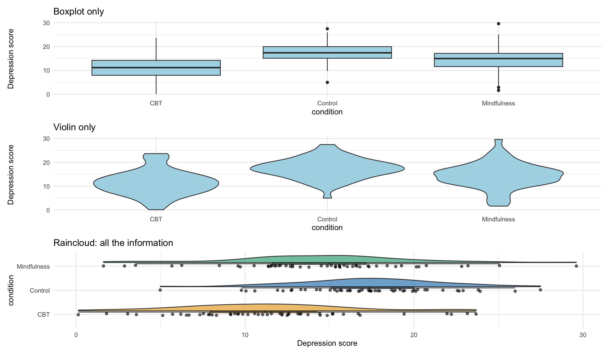When to use which
| Plot type | Shows | Best for |
|---|---|---|
| Boxplot | Median, IQR, outliers | Quick comparison, large datasets |
| Raincloud | Distribution + summary + raw data | Psychology papers, presentations, publications |
| Violin + jitter | Distribution + raw data | Alternative to raincloud, simpler to code |
Pair coding break
Your turn: Compare by gender
Using the therapy data, explore whether depression scores differ by gender:
- Add a
gendervariable to the data (usesample()to randomly assign “Male”, “Female”, “Non-binary”) - Create a visualization showing depression scores by gender
- Try at least two different geom types
- Add appropriate labels
Time: 10 minutes
Categorical + Categorical
Example: Diagnosis by gender
# A tibble: 6 × 2
gender diagnosis
<chr> <chr>
1 Non-binary Anxiety
2 Non-binary Depression
3 Female Anxiety
4 Male Depression
5 Female Anxiety
6 Non-binary Other Option 1: Stacked bar chart
Option 1: Stacked bar chart
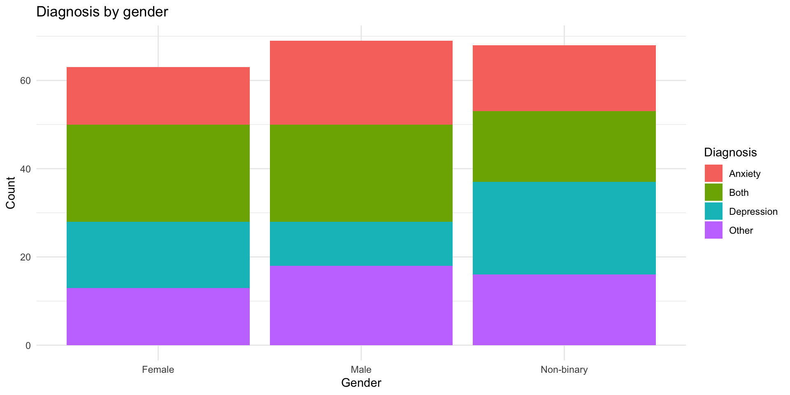
Option 2: Side-by-side bars
Option 2: Side-by-side bars
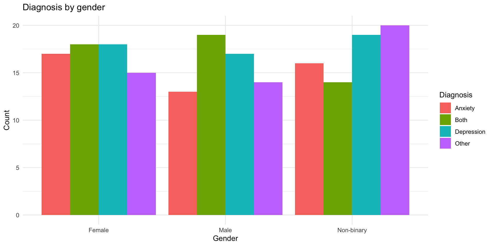
Option 3: Proportions
Option 3: Proportions
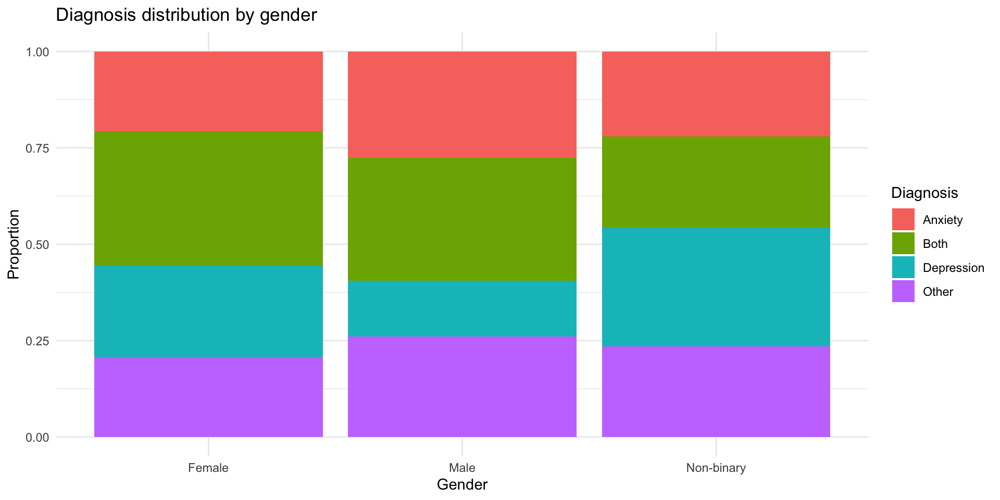
Option 4: geom_count()
Shows the size of overlaps:
Option 4: geom_count()
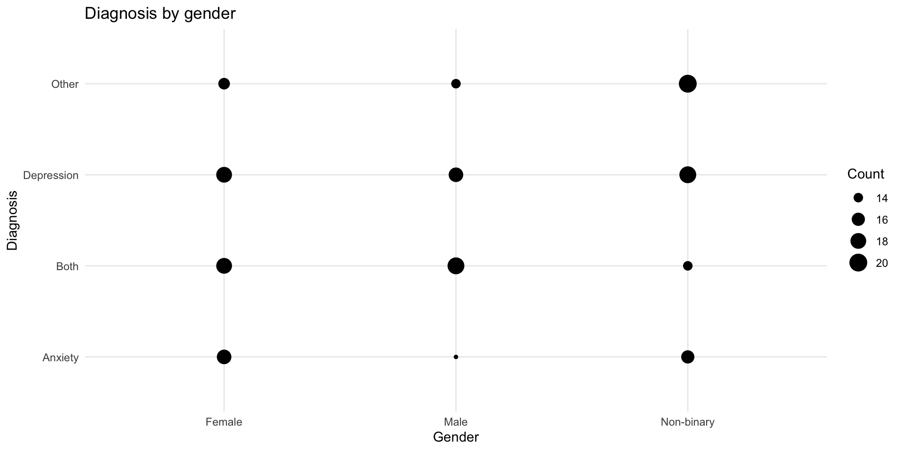
Option 5: Tile with counts
Option 5: Tile with counts
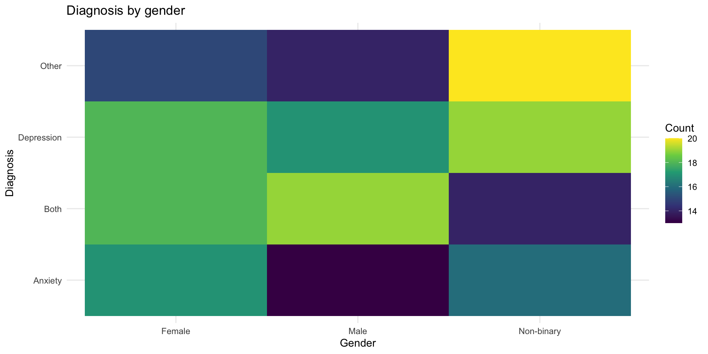
Continuous + Continuous
The classic: Scatterplots
Rows: 100
Columns: 2
$ age <dbl> 56.43039, 24.81925, 22.00801, 65.11047, 47.96659, 38.984…
$ reaction_time <dbl> 402.5356, 324.9255, 320.3351, 422.1141, 312.5042, 314.74…Basic scatterplot
Basic scatterplot
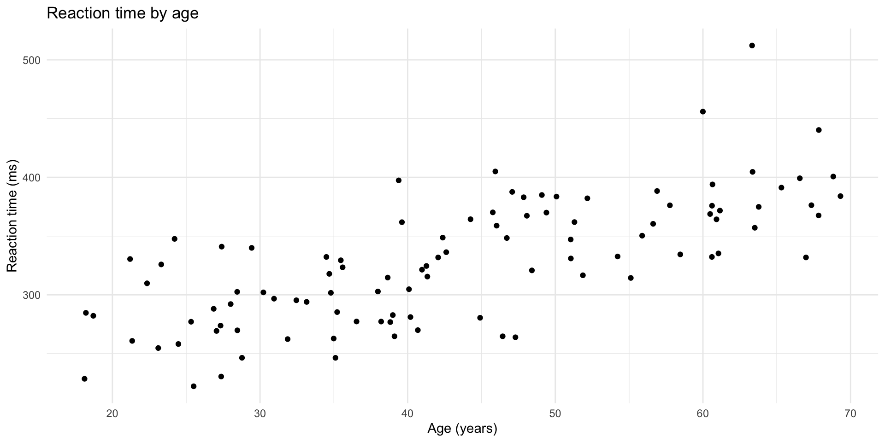
Add a trend line
Add a trend line
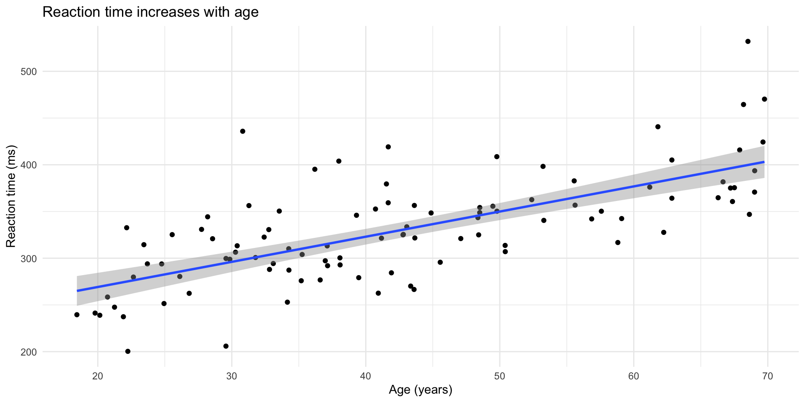
The problem: Overplotting
With lots of data, points overlap and hide the true density:
Overplotting problem demonstrated
Overplotting problem demonstrated
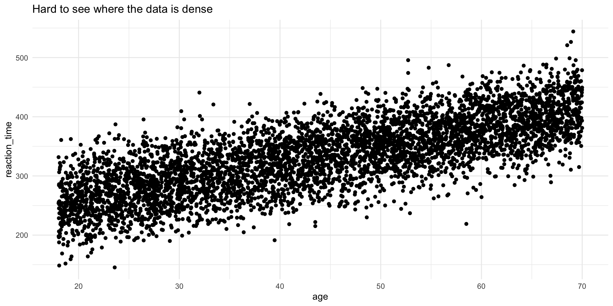
Solution 1: Transparency (alpha)
Solution 1: Transparency (alpha)
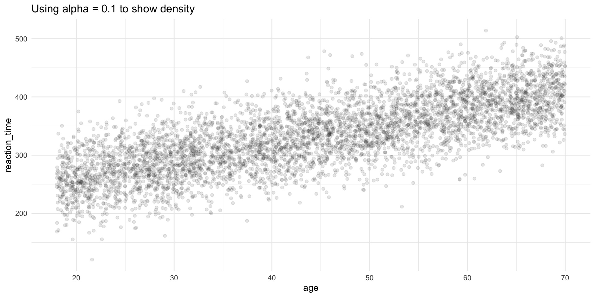
Solution 2: geom_bin2d()
Solution 2: geom_bin2d()
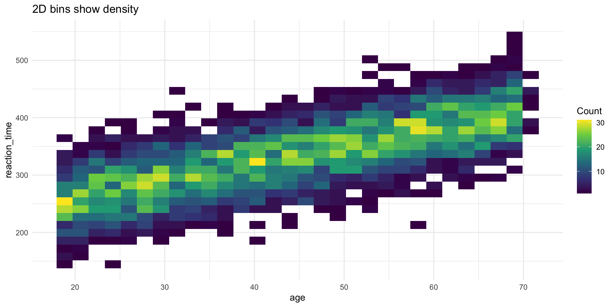
Solution 3: geom_hex()
Solution 3: geom_hex()
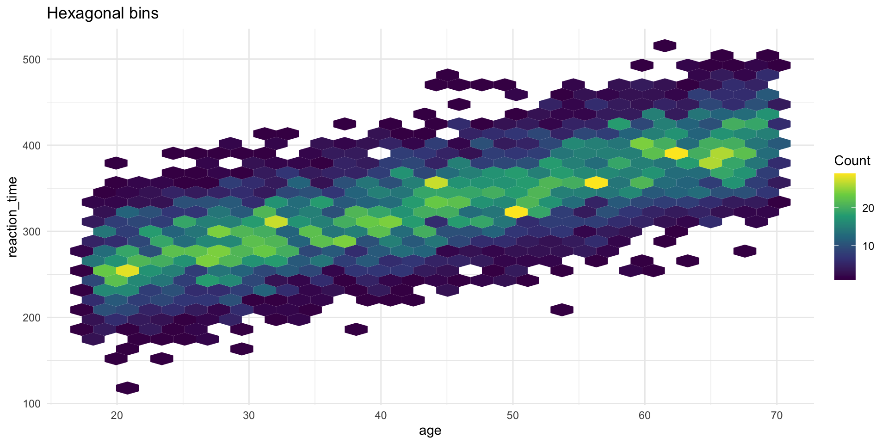
Correlation coefficient
A single number summary of the linear relationship:
Note
- r = 1: perfect positive relationship
- r = 0: no linear relationship
- r = -1: perfect negative relationship
But always plot your data first! (See: Anscombe’s Quartet)
Patterns and models
What patterns tell us
When you see covariation, ask:
- Could it be coincidence? (Maybe, especially with small samples)
- What’s the mechanism? (How are these variables related?)
- Is there a confound? (Could a third variable explain both?)
Warning
Correlation ≠ Causation
Covariation suggests a relationship, but doesn’t prove one variable causes the other.
Real psychology example
Let’s explore a real dataset: mpg (fuel economy data)
Rows: 234
Columns: 11
$ manufacturer <chr> "audi", "audi", "audi", "audi", "audi", "audi", "audi", "…
$ model <chr> "a4", "a4", "a4", "a4", "a4", "a4", "a4", "a4 quattro", "…
$ displ <dbl> 1.8, 1.8, 2.0, 2.0, 2.8, 2.8, 3.1, 1.8, 1.8, 2.0, 2.0, 2.…
$ year <int> 1999, 1999, 2008, 2008, 1999, 1999, 2008, 1999, 1999, 200…
$ cyl <int> 4, 4, 4, 4, 6, 6, 6, 4, 4, 4, 4, 6, 6, 6, 6, 6, 6, 8, 8, …
$ trans <chr> "auto(l5)", "manual(m5)", "manual(m6)", "auto(av)", "auto…
$ drv <chr> "f", "f", "f", "f", "f", "f", "f", "4", "4", "4", "4", "4…
$ cty <int> 18, 21, 20, 21, 16, 18, 18, 18, 16, 20, 19, 15, 17, 17, 1…
$ hwy <int> 29, 29, 31, 30, 26, 26, 27, 26, 25, 28, 27, 25, 25, 25, 2…
$ fl <chr> "p", "p", "p", "p", "p", "p", "p", "p", "p", "p", "p", "p…
$ class <chr> "compact", "compact", "compact", "compact", "compact", "c…Question 1: Does engine size affect fuel economy?
Question 1: Does engine size affect fuel economy?

Question 2: Does this vary by car type?
Question 2: Does this vary by car type?

Question 3: Which car types are most common?
Question 3: Which car types are most common?

End-of-deck exercise
Your final project proposal
For your final project, you’ll need to:
- Choose a dataset with at least 2-3 variables of interest
- Formulate 2-3 research questions about relationships in the data
- Plan visualizations to explore those relationships
Exercise: Start exploring potential datasets. Find one that interests you and create 2-3 exploratory visualizations showing different types of covariation (categorical + continuous, continuous + continuous, etc.).
This will form the basis of your proposal, due today!
Wrapping up
Key takeaways
- Covariation = relationships between variables
- Different plot types for different variable combinations:
- Categorical + continuous: boxplot, raincloud plots
- Categorical + categorical: bar charts, tiles, geom_count()
- Continuous + continuous: scatterplot, 2D bins, hex
- Raincloud plots are the gold standard for psychology — they show distribution, summary stats, and raw data
- Watch for overplotting — use alpha, jitter, or binning
- Always visualize first before computing correlations
- Patterns suggest but don’t prove causation
Before next class
📖 Read:
- R4DS Ch 12: Logical vectors
- R4DS Ch 13: Numbers
✅ Do:
- Submit Assignment 5
- Submit your Final Project Proposal (due today!)
- Start thinking about how you’ll compute scale scores (next session)
Questions?
See you Monday for data types and scale scoring!
PSY 410 | Session 10